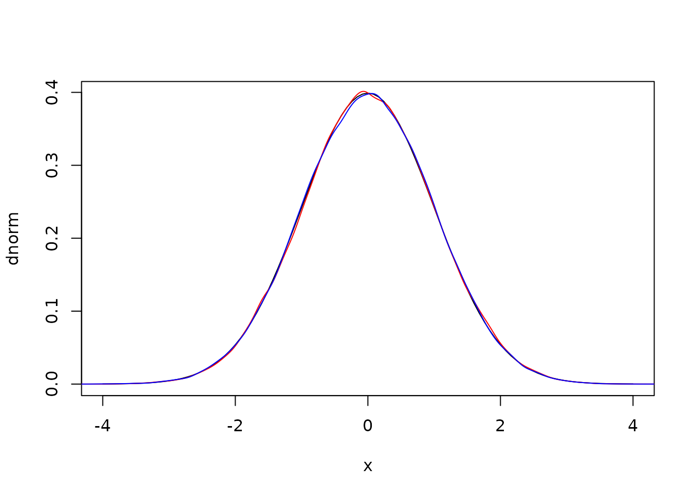
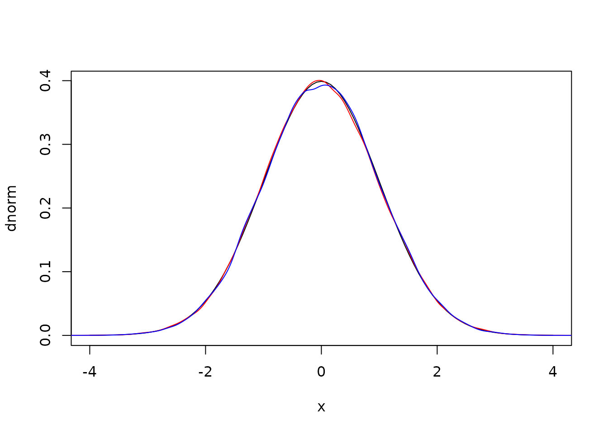
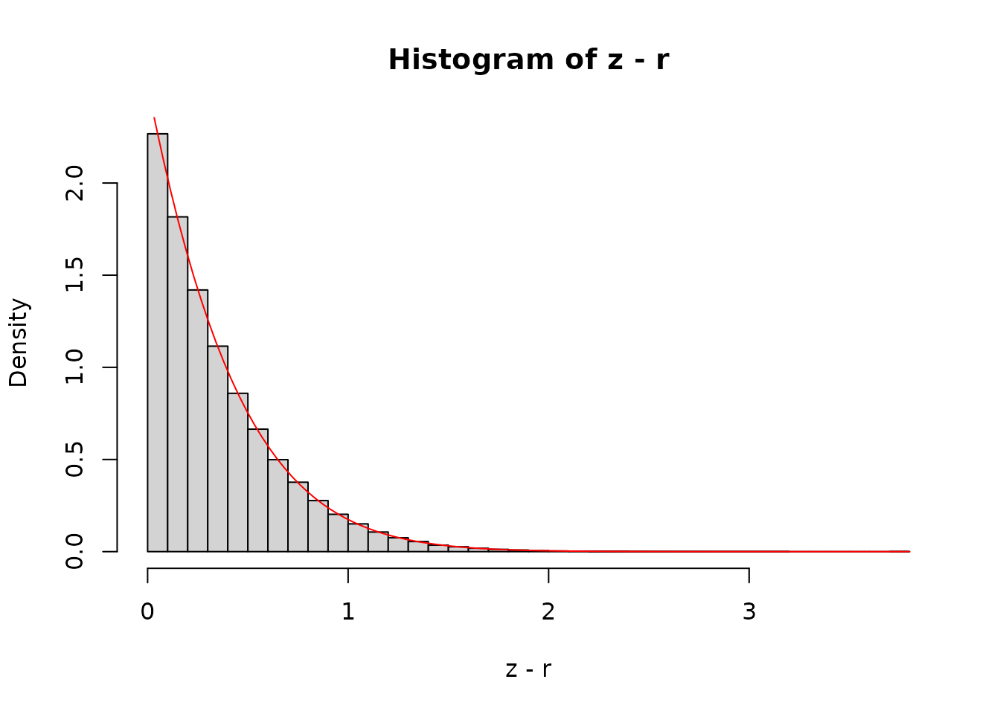
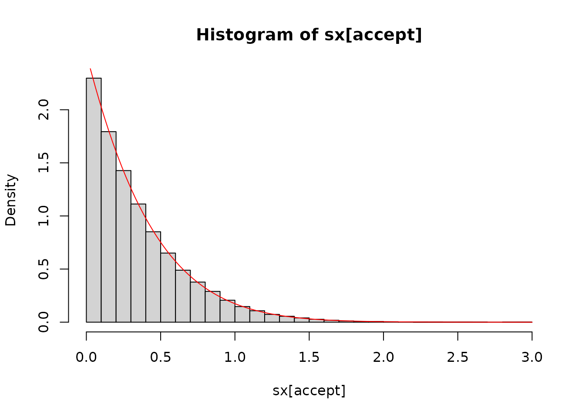
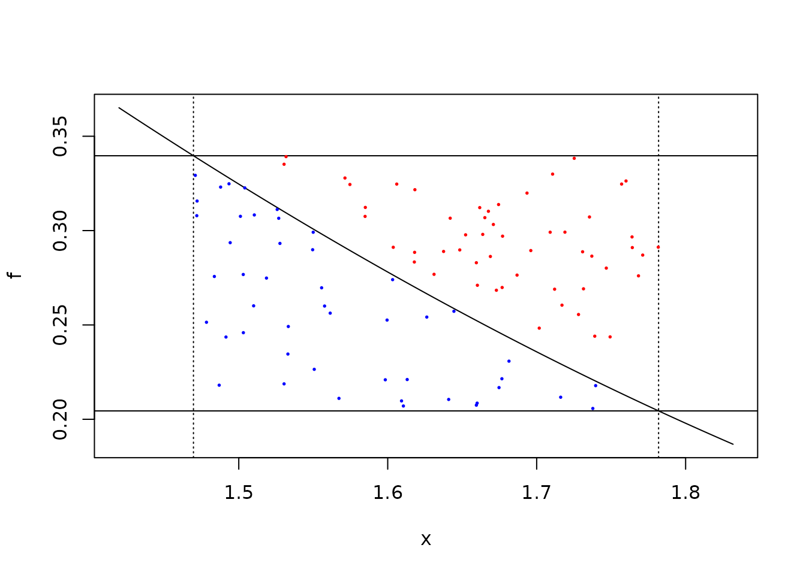

The dust package includes three algorithms for computing
normally distributed random numbers, all of which should be faster than
R’s rnorm when called from R on a single thread:
rng <- dust::dust_rng$new(NULL)
n <- 1e6
bench::mark(
r = rnorm(n),
box_muller = rng$random_normal(n, algorithm = "box_muller"),
polar = rng$random_normal(n, algorithm = "polar"),
ziggurat = rng$random_normal(n, algorithm = "ziggurat"),
check = FALSE, time_unit = "ms")
#> # A tibble: 4 × 6
#> expression min median `itr/sec` mem_alloc `gc/sec`
#> <bch:expr> <dbl> <dbl> <dbl> <bch:byt> <dbl>
#> 1 r 36.7 36.8 26.9 7.63MB 7.33
#> 2 box_muller 31.8 31.9 31.3 7.63MB 7.23
#> 3 polar 21.3 21.5 46.6 7.63MB 12.9
#> 4 ziggurat 6.60 6.78 147. 7.63MB 28.9(This is not their intended purpose of course - that is to be called from C++ in parallel.) This document collects some notes on the algorithms that underlie the code used.
n <- 1e5
theta <- 2 * pi * runif(n)
r <- sqrt(-2 * log(runif(n)))
r1 <- r * cos(theta)
r2 <- r * sin(theta)Here are density plots from these samples against the expectation

and the covariance between the two draws is statistically zero:
cov(r1, r2)
#> [1] 0.003985803Because we’re interested in running these algorithms in parallel we
have opted to discard the second draw (not running sin as
above). The simplest way to implement using both draws involves keeping
a record of your previous spare draw, but doing that in parallel
requires that each thread must be able to do that. We may change this in
future, or expose some system to enable doing this in a thread-safe
way.
The polar method improves on the Box-Muller method by avoiding the trigonometric functions at the expense of doing more random number draws.
We first generate points on the unit circle (i.e., a pair
(x, y) such that
x^2 + y^2 < 1). Then, letting s be the
distance between x and y, we can generate two values
x * sqrt(-2 * log(s) / s) and
y * sqrt(-2 * log(s) / s)
n <- 1e5
x <- runif(n, -1, 1)
y <- runif(n, -1, 1)
s <- x * x + y * y
i <- s < 1 # accept
r1 <- x[i] * sqrt(-2 * log(s[i]) / s[i])
r2 <- y[i] * sqrt(-2 * log(s[i]) / s[i])
plot(dnorm, -4, 4)
lines(density(r1), col = "red")
lines(density(r2), col = "blue")
Again the covariance is essentially zero
cov(r1, r2)
#> [1] -0.001675233Here it’s a bit more painful to discard the second draw as it’s
almost free; we already have the second term which cost us one call to
log and we need only do one multiply to get the second.
This would be worse if ziggurat wasn’t much faster.
The “Ziggurat method” draws random numbers from some distribution by a rejection sampling scheme. Unfortunately most implementations are opaque, both because they were written in C and because they have been milked for every bit of performance possible. We wanted a version that was fast, but also easy to understand and to relate to the original papers.
The principal reference we will follow is Doornik 2005. As with that paper, we consider an non-normalised right hand side of the normal distribution:
It will be useful to also have functions f_inv (the
inverse of f) and f_int (the integral of
f from x to infinity)
f_inv <- function(y) {
sqrt(-2 * log(y))
}
f_int <- function(r) {
pnorm(r, lower.tail = FALSE) / dnorm(0)
}To work with the algorithm we need to cover this curve with
n evenly sized rectangles, with the lowest one having
infinite width. We’ll use these rectangles for the sampling scheme,
described below
Finding these rectangles turns out to be nontrivial.
Suppose we want to cover f with 6 rectangles; to do this
we need to find the area of each of the rectangles (will be slightly
larger area under f divided by n due to the
overhangs) and a series of x points (x1,
x2, …, xn) with the last one being 0
x location of
the final rectangle, say r
f(r) * r + f_int(r)
f_inv(f(r) + v / r)
r above with the x value from the previous
iterationFrom the diagram above it looks like x1 might be a bit
bigger than 2. Starting with a guess of 2.2:
n <- 6
r <- 2.2
v <- r * f(r) + f_int(r)
x <- numeric(6)
x[1] <- r
for (i in 2:(n - 1)) {
x[i] <- f_inv(f(x[i - 1]) + v / x[i - 1])
}We now have a series of x values
x
#> [1] 2.2000000 1.8119187 1.5077600 1.2223596 0.9077862 0.0000000The area of the final rectangle must be
x[n - 1] * (f(0) - f(x[n - 1]))
#> [1] 0.3065602which is bigger than all the others, which have area
v. If we’d made our original guess too small (say 2.1) then
we’d have too small a final area. We can capture this in a
small nonlinear equation to solve:
target <- function(r, n = 6) {
v <- r * f(r) + f_int(r)
x <- r
for (i in 2:(n - 1)) {
x <- f_inv(f(x) + v / x)
}
x * (f(0) - f(x)) - v
}
target(2.2)
#> [1] 0.07608185
target(2.1)
#> [1] -0.2233091This is easily solved by uniroot:
ans <- uniroot(target, c(2.1, 2.2))
ans
#> $root
#> [1] 2.176047
#>
#> $f.root
#> [1] -3.954086e-05
#>
#> $iter
#> [1] 3
#>
#> $init.it
#> [1] NA
#>
#> $estim.prec
#> [1] 6.103516e-05This approach works for any n, though in practice some
care is needed to select good bounds.
Once we have found this value, we can compute our series of
x values as above:
r <- ans$root
v <- r * f(r) + f_int(r)
x <- numeric(n)
x[1] <- r
for (i in 2:(n - 1)) {
x[i] <- f_inv(f(x[i - 1]) + v / x[i - 1])
}
x
#> [1] 2.1760469 1.7818609 1.4695742 1.1712803 0.8287847 0.0000000To sample from the distribution using these rectangles we do:
n)u (between 0 and 1); scale this
by x[i] to get z
i == 0 (the base layer)
z < r then the point lies in the rectangle and
can be acceptedi > 1 (any other layer):
z < x[i - 1] then the point lies entirely within
the distribution and can be acceptedNote the slightly different alternative conditions for the base layer and others; for the base layer we will find a sample from the tail even if it takes a few goes, but for the regions with overlaps we only try once and if that does not succeed we start again by selecting a new layer.
For sampling from the tail we use the algorithm of Marsaglia (1963);
given U(0, 1) random numbers u1 and u2 and
using the value of r from above (i.e.,
x[1]):
-log(u1) / r
-log(u2)
2 y > x^2 accept x + r, otherwise
try againTo see this in action, first, let’s generate a set of normal draws
from the tail (beyond x[1])
z <- abs(rnorm(1e7))
z <- z[z >= r]
hist(z - r, nclass = 30, freq = FALSE)
curve(dnorm(x + r) / pnorm(r, lower.tail = FALSE), add = TRUE, col = "red")
The curve is the analytical density function, shifted by
r along the x-axis and scaled so that the area under the
tail is 1.
Generating a reasonably large number of samples (here 10 thousand) shows a good agreement between the samples and the expectation:
sx <- -log(runif(1e5)) / r
sy <- -log(runif(1e5))
accept <- 2 * sy > sx^2
hist(sx[accept], nclass = 30, freq = FALSE, xlim = c(0, 3))
curve(dnorm(x + r) / pnorm(r, lower.tail = FALSE), add = TRUE, col = "red")
With the relatively low r here, our acceptance
probability is not bad (~86 %) but as r increases it will
improve:
If our point in layer i (i > 1) lies
outside of the safe zone we need to do a full rejection sample. We start
by illustrating this graphically; given two U(0, 1) numbers scaled to
(x[3], x[2]) and f(x[3]), f(x[2]) we would
accept the blue points below but not the red ones:
plot(f, x[3] - 0.05, x[2] + 0.05)
abline(v = x[2:3], lty = 3)
abline(h = f(x[2:3]))
f0 <- f(x[3])
f1 <- f(x[2])
u1 <- runif(100, x[3], x[2]) # these ones are filtered already
u2 <- runif(100)
y <- f0 + u2 * (f1 - f0)
accept <- y < f(u1)
points(u1, y, col = ifelse(accept, "blue", "red"), pch = 19, cex = 0.25)
The above calculation computes three values of f; for
x[2], x[3] and u1, each of these
involves a calculation of exp() which is fairly costly.
Adding in tables of fx = f(x) actually slows things down
slightly as well as increasing the number of constants rattling around
the program.
Alternatively if we take the acceptance equation:
f(x[3]) + u2 * (f(x[2]) - f(x[3])) < f(u1)and divide both sides by f(u1) we get
f(x[3]) / f(u1) + u2 * (f(x[2]) / f(u1) - f(x[3]) / f(u1)) < 1then we can rearrange slightly using the fact that
f(a) / f(b) = exp(-0.5 * (a^2 - b^2) to write
f2_u1 <- exp(-0.5 * (x[2]^2 - u1^2))
f3_u1 <- exp(-0.5 * (x[3]^2 - u1^2))which we can use to get the same acceptance as above:
table(f3_u1 + u2 * (f2_u1 - f3_u1) < 1.0, accept)This is the approach we use in the implementation.
In the naive version we draw a random number on [0, 1)
and compare that with the bounds x.
Suppose we are sampling in the 3rd layer; we draw a random number
u and scale it by x[2], then accept if that
scaled value is less than x[3], otherwise check to see if
we are in the tail
u <- runif(50)
z <- u * x[2]
z < x[3]
#> [1] TRUE TRUE FALSE TRUE TRUE TRUE TRUE TRUE TRUE FALSE TRUE TRUE
#> [13] TRUE TRUE TRUE TRUE TRUE TRUE TRUE TRUE TRUE TRUE TRUE TRUE
#> [25] FALSE TRUE TRUE TRUE TRUE TRUE TRUE FALSE TRUE TRUE TRUE TRUE
#> [37] FALSE TRUE FALSE FALSE TRUE TRUE TRUE FALSE TRUE TRUE TRUE TRUE
#> [49] TRUE TRUEMost of the numbers are accepted (this is the point of the algorithm
and that acceptance probability increases as n does).
There are two tricks that can be done here to make this more
efficient. First we can notice that the above calculation is equivalent
to u < x[3] / x[2]:
all((u < x[3] / x[2]) == (u * x[2] < x[3]))
#> [1] TRUEand by saving the values of x[i] / x[i - 1] in our
tables we can avoid many multiplications.
In the description above, we take two random draws at first - one for
the layer and one for the x position. Some implementation
do that with a single draw but this is not safe if your random number
generator works in terms of 32 bit integers (see Doornik 2005)
as all bits are needed to convert to a double and this creates a
correlation between the layer and the position.
However, most of our random number generators work with 64 bit
integers and we only use the top 53 bits to make a double-precision
number. So we take bits 4 to 11 to create the integer between 0 and 255
for the layer. If using a 32 bit generator (one of the
xoshiro128 generators) then a second number will be used;
this decision will be made at compile time so should come with no
runtime cost. With the + scramblers the lower bits are not
of the same quality (See this
paper) but for xoshiro256+ by the 4th bit the
randomness should be of sufficient quality.